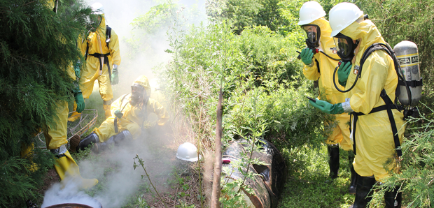

Back to all projects
Back to all projects
Hazmat Augmented Reality Solution

Project Details
The project was sponsored by an SBIR/ STTR grant to support The Rutgers School of Public Health (RSPH) Office of Public Health Practice (OPHP) project.
Project Goals
The goal was to create a realistic, inexpensive, and easy-to-use simulation of chemical spill sensors in HAZMAT training.
Project Results
A developed Android application that simulates readings of a HAZMAT sensor to show the chemical spill locations in the HAZMAT training ground.
“A fully functional prototype that has already been used in classes at Rutgers School of Public Health.”
“A fully functional prototype that has already been used in classes at Rutgers School of Public Health.”
Project Overview
The Rutgers School of Public Health (RSPH) Office of Public Health Practice (OPHP) conducts hands-on exercises that are a vital part of its HAZMAT training programs. A key objective of these exercises is to provide learners with realistic experiences
involving (1) hazards, (2) personal protective equipment (PPE), and (3) air monitoring instruments, to assess learner performance in the context of these realistic experiences.
OPHP learners work with actual PPE and very realistic looking (and behaving) simulated hazards. Missing from the experience, however, are hazard sensors, including chemical and radiological, that in real time provide the learners with realistic readings representative of the current condition of the exercise, such as hazard types, hazard and learner positions, and wind speed and direction. Instead, instructors periodically shout exposure levels to learners during the exercise from the sidelines, undoing much of the effort to make the overall exercise realistic to the learner and increasing burden to the instructor, impeding multi-learner exercises.
OPHP learners work with actual PPE and very realistic looking (and behaving) simulated hazards. Missing from the experience, however, are hazard sensors, including chemical and radiological, that in real time provide the learners with realistic readings representative of the current condition of the exercise, such as hazard types, hazard and learner positions, and wind speed and direction. Instead, instructors periodically shout exposure levels to learners during the exercise from the sidelines, undoing much of the effort to make the overall exercise realistic to the learner and increasing burden to the instructor, impeding multi-learner exercises.
Project Execution
The proposed augmented reality training system addresses the above need for sensor simulators for HAZMAT training. The system meets several key requirements assessed during Phase I. First, the system includes handheld devices that look similar to handheld
chemical and radiological hazard sensors. Second, the handheld devices behave as if they were actual hazard sensors and the training hazards were real.
A specific aim of the project was to design this system, so that it is low cost and complementary with the existing assets of HAZMAT training programs. To reduce the cost of acquiring and operating the system, the system hardware consists only of consumer cell phones to emulate the handheld hazard sensors, and inexpensive miniature Bluetooth beacons (under $35 each) which are placed on each mock hazard of the exercise to inform the system where each hazard is located with centimeter precision.
The proposed augmented reality training system consists of a mobile phone application that emulates a hazard sensor, miniature low-energy range-finding Bluetooth beacons (one per hazard), and a web application that calculates exposure levels and through which the instructor configures the exercise.
A specific aim of the project was to design this system, so that it is low cost and complementary with the existing assets of HAZMAT training programs. To reduce the cost of acquiring and operating the system, the system hardware consists only of consumer cell phones to emulate the handheld hazard sensors, and inexpensive miniature Bluetooth beacons (under $35 each) which are placed on each mock hazard of the exercise to inform the system where each hazard is located with centimeter precision.
The proposed augmented reality training system consists of a mobile phone application that emulates a hazard sensor, miniature low-energy range-finding Bluetooth beacons (one per hazard), and a web application that calculates exposure levels and through which the instructor configures the exercise.
Project Impact
The proposed augmented reality training system consists of a mobile phone application that emulates a hazard sensor, miniature low-energy range-finding Bluetooth beacons (one per hazard), and a web application that calculates exposure levels and through
which the instructor configures the exercise.
It represents a step forward in the quality and relevance of hazardous operations (HAZOPS) training. eLearning has improved training over traditional classroom teaching, and many believe that the next step in eLearning is immersion, i.e., field training that engages mind and body in simulating the experience of being autonomous in (simulated) dangerous situations. Immersive experiential/physical learning has been widely adopted; for example, OPHP runs at least five exercises every year in which a simulated hazardous waste site is prepared for students as part of their hands-on training in the 40-hour Hazardous Waste Training course.
It represents a step forward in the quality and relevance of hazardous operations (HAZOPS) training. eLearning has improved training over traditional classroom teaching, and many believe that the next step in eLearning is immersion, i.e., field training that engages mind and body in simulating the experience of being autonomous in (simulated) dangerous situations. Immersive experiential/physical learning has been widely adopted; for example, OPHP runs at least five exercises every year in which a simulated hazardous waste site is prepared for students as part of their hands-on training in the 40-hour Hazardous Waste Training course.